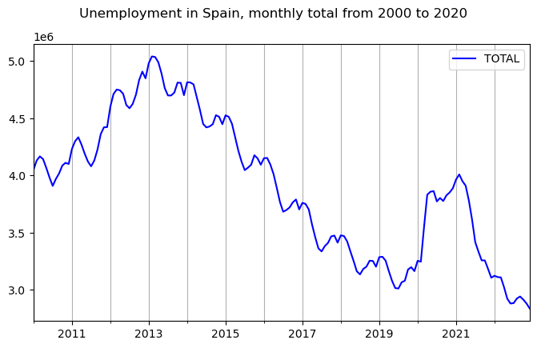
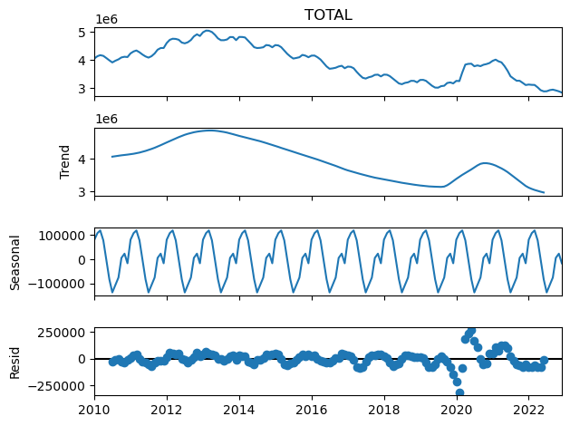

### Load necessary libraries
# plotting
%matplotlib inline
import pandas as pd
import matplotlib.pyplot as plt
from statsmodels.tsa.seasonal import seasonal_decomposeLoad dataset
fdata = pd.read_csv('./Lab1_Decomposition_v5/Unemployment.dat', delimiter=", ")
fdata.head()/tmp/ipykernel_13141/2043934750.py:1: ParserWarning: Falling back to the 'python' engine because the 'c' engine does not support regex separators (separators > 1 char and different from '\s+' are interpreted as regex); you can avoid this warning by specifying engine='python'.
fdata = pd.read_csv('./Lab1_Decomposition_v5/Unemployment.dat', delimiter=", ")| DATE | TOTAL | |
|---|---|---|
| 0 | 01/01/2010 | 4048493 |
| 1 | 01/02/2010 | 4130625 |
| 2 | 01/03/2010 | 4166613 |
| 3 | 01/04/2010 | 4142425 |
| 4 | 01/05/2010 | 4066202 |
Explore the data
fdata.info()<class 'pandas.core.frame.DataFrame'>
RangeIndex: 156 entries, 0 to 155
Data columns (total 2 columns):
# Column Non-Null Count Dtype
--- ------ -------------- -----
0 DATE 156 non-null object
1 TOTAL 156 non-null int64
dtypes: int64(1), object(1)
memory usage: 2.6+ KBMaking the ‘DATE’ column a datetime type
fdata["DATE"] = pd.to_datetime(fdata["DATE"], format="%d/%m/%Y")
fdata.head()| DATE | TOTAL | |
|---|---|---|
| 0 | 2010-01-01 | 4048493 |
| 1 | 2010-02-01 | 4130625 |
| 2 | 2010-03-01 | 4166613 |
| 3 | 2010-04-01 | 4142425 |
| 4 | 2010-05-01 | 4066202 |
fdata.info()<class 'pandas.core.frame.DataFrame'>
RangeIndex: 156 entries, 0 to 155
Data columns (total 2 columns):
# Column Non-Null Count Dtype
--- ------ -------------- -----
0 DATE 156 non-null datetime64[ns]
1 TOTAL 156 non-null int64
dtypes: datetime64[ns](1), int64(1)
memory usage: 2.6 KBCreating a Temporal Index
The temporal ordering of the data is so important that it is often used as the index of the dataframe, We can achieve this as follows (MS stands for Month Start):
fdata.set_index('DATE', inplace=True)
fdata.index.freq = 'MS'
fdata.head()| TOTAL | |
|---|---|
| DATE | |
| 2010-01-01 | 4048493 |
| 2010-02-01 | 4130625 |
| 2010-03-01 | 4166613 |
| 2010-04-01 | 4142425 |
| 2010-05-01 | 4066202 |
Silent missing values: time gaps in the data
The following issue we are going to address is a particular problem with time series data. As we have said, the temporal structure of the data is essential. This means that the absence of a data point at a certain time is a piece of information in itself. We call this a time gap in the series and it can easily go unnoticed at first sight. But such time gaps can cause problems in the analysis downstream, as some models will simply be unable to handle them. It is important to get in the habit of detecting time gaps and dealing with them.
We can do that by first creating a sequence of time instants with the same frequency as our time series but without time gaps. We call it a full range below. We do this using the pandas function date_range.
We then simply compare that sequence with the index of the time series:
# Find start and end date of the rime series
start_date = fdata.index.min()
end_date = fdata.index.max()
print(start_date, end_date)
# Generate a full range of months
full_range = pd.date_range(start=start_date, end=end_date, freq='MS') # 'MS' ensures month start
full_range[:5], full_range[-5:]2010-01-01 00:00:00 2022-12-01 00:00:00(DatetimeIndex(['2010-01-01', '2010-02-01', '2010-03-01', '2010-04-01',
'2010-05-01'],
dtype='datetime64[ns]', freq='MS'),
DatetimeIndex(['2022-08-01', '2022-09-01', '2022-10-01', '2022-11-01',
'2022-12-01'],
dtype='datetime64[ns]', freq='MS'))If the missing_months variable below is not empty, it means that we have time gaps in the data. In this case there are no time gaps.
missing_months = full_range.difference(fdata.index)
missing_monthsDatetimeIndex([], dtype='datetime64[ns]', freq='MS')If there were time gaps the code below would fill the other variables as missing values (NaN), which we can then deal with later on.
fdata = fdata.reindex(full_range)
fdata.info()<class 'pandas.core.frame.DataFrame'>
DatetimeIndex: 156 entries, 2010-01-01 to 2022-12-01
Freq: MS
Data columns (total 1 columns):
# Column Non-Null Count Dtype
--- ------ -------------- -----
0 TOTAL 156 non-null int64
dtypes: int64(1)
memory usage: 2.4 KBWe can now look for the missing values in the TOTAL column.
fdata.isna().sum()TOTAL 0
dtype: int64There are no missing values in this case. Later we will see how to deal with missing values when they do occur.
Time plot for the time series:
fig, ax = plt.subplots()
fdata.plot(figsize=(8,4.5), c="blue", ax= ax)
fig.suptitle('Unemployment in Spain, monthly total from 2000 to 2020')
ax.grid(visible=True, which='Both', axis='x')
plt.show();plt.close()
Decomposition methods
fdata| TOTAL | |
|---|---|
| 2010-01-01 | 4048493 |
| 2010-02-01 | 4130625 |
| 2010-03-01 | 4166613 |
| 2010-04-01 | 4142425 |
| 2010-05-01 | 4066202 |
| ... | ... |
| 2022-08-01 | 2924240 |
| 2022-09-01 | 2941919 |
| 2022-10-01 | 2914892 |
| 2022-11-01 | 2881380 |
| 2022-12-01 | 2837653 |
156 rows × 1 columns
This is how to do an additive decomposition:
fdata_dcmp_add = seasonal_decompose(fdata['TOTAL'], model='additive')And now we can look at the different components of the decomposition. Beginning with the trend component:
fdata_dcmp_add.trend.head(10)2010-01-01 NaN
2010-02-01 NaN
2010-03-01 NaN
2010-04-01 NaN
2010-05-01 NaN
2010-06-01 NaN
2010-07-01 4.068360e+06
2010-08-01 4.082992e+06
2010-09-01 4.096979e+06
2010-10-01 4.109229e+06
Freq: MS, Name: trend, dtype: float64Note the pure periodicity in the seasonal component. This is a characteristic of this classical decomposition:
fdata_dcmp_add.seasonal.head(24)2010-01-01 80842.168403
2010-02-01 107996.734375
2010-03-01 118956.321181
2010-04-01 78346.404514
2010-05-01 30.897569
2010-06-01 -82320.470486
2010-07-01 -136268.862847
2010-08-01 -105383.043403
2010-09-01 -75046.296875
2010-10-01 5818.828125
2010-11-01 23309.345486
2010-12-01 -16282.026042
2011-01-01 80842.168403
2011-02-01 107996.734375
2011-03-01 118956.321181
2011-04-01 78346.404514
2011-05-01 30.897569
2011-06-01 -82320.470486
2011-07-01 -136268.862847
2011-08-01 -105383.043403
2011-09-01 -75046.296875
2011-10-01 5818.828125
2011-11-01 23309.345486
2011-12-01 -16282.026042
Freq: MS, Name: seasonal, dtype: float64And we can get a nice graphical representation of the decomposition as follows:
plt.figure()
fdata_dcmp_add.plot()
plt.show();plt.close()<Figure size 640x480 with 0 Axes>